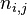
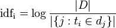
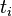
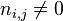
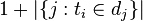
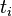
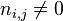
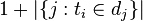
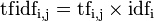

倒排索引简介
倒排索引源于实际应用中需要根据属性的值来查找记录。这种索引表中的每一项都包括一个属性值和具有该属性值的各记录的地址。由于不是由记录来确定属性值，而是由属性值来确定记录的位置，因而称为倒排索引(inverted index)。带有倒排索引的文件我们称为倒排索引文件，简称倒排文件(inverted file)。
倒排文件（倒排索引），索引对象是文档或者文档集合中的单词等，用来存储这些单词在一个文档或者一组文档中的存储位置，是对文档或者文档集合的一种最常用的索引机制。
搜索引擎的关键步骤就是建立倒排索引，倒排索引一般表示为一个关键词，然后是它的频度（出现的次数），位置（出现在哪一篇文章或网页中，及有关的日期，作者等信息），它相当于为互联网上几千亿页网页做了一个索引，好比一本书的目录、标签一般。读者想看哪一个主题相关的章节，直接根据目录即可找到相关的页面。不必再从书的第一页到最后一页，一页一页的查找。
Lucene倒排索引原理
Lucene是一个开放源代码的高性能的Java全文检索引擎工具包，不是一个完整的全文检索引擎，而是一个全文检索引擎的架构，提供了完整的查询引擎和索引引擎，部分文本分析引擎。目的是为软件开发人员提供一个简单易用的工具包，以方便在目标系统中实现全文检索的功能，或者以此为基础建立起完整的全文检索引擎。
Lucene使用的是倒排文件索引结构。该结构及相应的生成算法如下：
设有两篇文章1和2：
文章1的内容为：
Tom lives in Guangzhou, I live in Guangzhou too.
文章2的内容为：
He once lived in Shanghai.
取得关键词
由于Lucene是基于关键词索引和查询的，首先我们要取得这两篇文章的关键词，通常我们需要如下处理措施：
我们现在有的是文章内容，即一个字符串，我们先要找出字符串中的所有单词，即分词。英文单词由于用空格分隔，比较好处理。中文单词间是连在一起的需要特殊的分词处理
去掉没有意义的大众词汇。文章中的in, once, too等词没有什么实际意义，中文中的的、是等字通常也无具体含义，这些不代表概念的词可以过滤掉
用户通常希望查He时能把含he，HE的文章也找出来，所以所有单词需要统一大小写。
单词的统一化。用户通常希望查live时能把含lives，lived的文章也找出来，所以需要把lives，lived还原成live
文章中的标点符号通常不表示某种概念，也可以过滤掉
在Lucene中以上措施由Analyzer类完成。 经过上面处理后，
文章1的所有关键词为：
[tom] [live] [guangzhou] [i] [live] [guangzhou]
文章2的所有关键词为：
[he] [live] [shanghai]
建立倒排索引
有了关键词后，我们就可以建立倒排索引了。上面的对应关系是：文章号对文章中所有关键词。倒排索引把这个关系倒过来，变成: 关键词对拥有该关键词的所有文章号。
文章1，2经过倒排后变成
关键词 文章号
guangzhou 1
he 2
i 1
live 1,2
shanghai 2
tom 1
通常仅知道关键词在哪些文章中出现还不够，我们还需要知道关键词在文章中出现次数和出现的位置，通常有两种位置：
加上出现频率和出现位置信息后，我们的索引结构变为：
关键词 文章号[出现频率] 出现位置
guangzhou 1[2] 3, 6
he 2[1] 1
i 1[1] 4
live 1[2] 2, 5
2[1] 2
shanghai 2[1] 3
tom 1[1] 1
以live这行为例我们说明一下该结构：live在文章1中出现了2次，文章2中出现了一次，它的出现位置为2,5,2这表示什么呢？我们需要结合文章号和出现频率来分析，文章1中出现了2次，那么2,5就表示live在文章1中出现的两个位置，文章2中出现了一次，剩下的2就表示live是文章2中第2个关键字。
以上就是Lucene索引结构中最核心的部分。我们注意到关键字是按字符顺序排列的（Lucene没有使用B树结构），因此Lucene可以用二元搜索算法快速定位关键词。
实现
实现时，Lucene将上面三列分别作为词典文件（Term Dictionary）、频率文件(frequencies)、位置文件(positions)保存。其中词典文件不仅保存有每个关键词，还保留了指向频率文件和位置文件的指针，通过指针可以找到该关键字的频率信息和位置信息。
Lucene中使用了field的概念，用于表达信息所在位置（如标题中，文章中，url中），在建索引中，该field信息也记录在词典文件中，每个关键词都有一个field信息(因为每个关键字一定属于一个或多个field)。
压缩算法
为了减小索引文件的大小，Lucene对索引还使用了压缩技术。
首先，对词典文件中的关键词进行了压缩，关键词压缩为<前缀长度，后缀>
例如：当前词为“阿拉伯语”，上一个词为“阿拉伯”，那么“阿拉伯语”压缩为<3，语>。
其次大量用到的是对数字的压缩，数字只保存与上一个值的差值（这样可以减小数字的长度，进而减少保存该数字需要的字节数）。例如当前文章号是16389（不压缩要用3个字节保存），上一文章号是16382，压缩后保存7（只用一个字节）。
应用原因
下面我们可以通过对该索引的查询来解释一下为什么要建立索引。
假设要查询单词live，Lucene先对词典二元查找、找到该词，通过指向频率文件的指针读出所有文章号，然后返回结果。词典通常非常小，因而，整个过程的时间是毫秒级的。
而用普通的顺序匹配算法，不建索引，而是对所有文章的内容进行字符串匹配，这个过程将会相当缓慢，当文章数目很大时，时间往往是无法忍受的。
TF-IDF及其算法
TF-IDF（term frequency – inverted document frequency）是一种用于资讯检索与资讯探勘的常用加权技术。TF-IDF是一种统计方法，用以评估一字词对于一个文件集或一个语料库中的其中一份文件的重要程度。字词的重要性随着它在文件中出现的次数成正比增加，但同时会随着它在语料库中出现的频率成反比下降。TF-IDF加权的各种形式常被搜寻引擎应用，作为文件与用户查询之间相关程度的度量或评级。除了TF-IDF以外，因特网上的搜寻引擎还会使用基于连结分析的评级方法，以确定文件在搜寻结果中出现的顺序。
原理
在一份给定的文件里，词频 (term frequency, TF)指的是某一个给定的词语在该文件中出现的次数。这个数字通常会被归一化（分子一般小于分母区别于IDF），以防止它偏向长的文件。（同一个词语在长文件里可能会比短文件有更高的词频，而不管该词语重要与否。）
逆向文件频率 (inverse document frequency, IDF)是一个词语普遍重要性的度量。某一特定词语的IDF，可以由总文件数目除以包含该词语之文件的数目，再将得到的商取对数得到。
某一特定文件内的高词语频率，以及该词语在整个文件集合中的低文件频率，可以产生出高权重的TF-IDF。因此，TF-IDF倾向于过滤掉常见的词语，保留重要的词语。
TFIDF的主要思想是：如果某个词或短语在一篇文章中出现的频率TF高，并且在其他文章中很少出现，则认为此词或者短语具有很好的类别区分能力，适合用来分类。TFIDF实际上是：TF * IDF，TF词频(Term Frequency)，IDF反文档频率(Inverse Document Frequency)。TF表示词条在文档d中出现的频率（另一说：TF词频(Term Frequency)指的是某一个给定的词语在该文件中出现的次数）。IDF的主要思想是：如果包含词条t的文档越少，也就是n越小，IDF越大，则说明词条t具有很好的类别区分能力。如果某一类文档C中包含词条t的文档数为m，而其它类包含t的文档总数为k，显然所有包含t的文档数n=m+k，当m大的时候，n也大，按照IDF公式得到的IDF的值会小，就说明该词条t类别区分能力不强。（另一说：IDF反文档频率(Inverse Document Frequency)是指果包含词条的文档越少，IDF越大，则说明词条具有很好的类别区分能力。）但是实际上，如果一个词条在一个类的文档中频繁出现，则说明该词条能够很好代表这个类的文本的特征，这样的词条应该给它们赋予较高的权重，并选来作为该类文本的特征词以区别与其它类文档。这就是IDF的不足之处.
在一份给定的文件里，词频（term frequency，TF）指的是某一个给定的词语在该文件中出现的频率。这个数字是对词数(term count)的归一化，以防止它偏向长的文件。（同一个词语在长文件里可能会比短文件有更高的词数，而不管该词语重要与否。）
对于在某一特定文件 dj 里的词语 ti 来说，它的重要性可表示为：

以上式子中 
是该词在文件
中的出现次数，而分母则是在文件中所有字词的出现次数之和。
逆向文件频率（inverse document frequency，IDF）是一个词语普遍重要性的度量。某一特定词语的IDF，可以由总文件数目除以包含该词语之文件的数目，再将得到的商取对数得到：

其中
- |D|：语料库中的文件总数
 ：包含词语 
的文件数目（即 
的文件数目）如果该词语不在语料库中，就会导致被除数为零，因此一般情况下使用 
：包含词语 
的文件数目（即 
的文件数目）如果该词语不在语料库中，就会导致被除数为零，因此一般情况下使用 
然后

某一特定文件内的高词语频率，以及该词语在整个文件集合中的低文件频率，可以产生出高权重的TF-IDF。因此，TF-IDF倾向于过滤掉常见的词语，保留重要的词语。
示例
示例一
假如一篇文件的总词语数是100个，而词语母牛出现了3次，那么母牛一词在该文件中的词频tf就是3/100=0.03。一个计算文件频率 (DF) 的方法是测定有多少份文件出现过母牛一词，然后除以文件集里包含的文件总数。所以，如果母牛一词在1,000份文件出现过，而文件总数是10,000,000份的话，其逆向文件频率就是 log(10,000,000 / 1,000)=4。最后的TF-IDF的分数为0.03 * 4=0.12。
示例二
根据关键字k1,k2,k3进行搜索结果的相关性就变成 TF1 x IDF1 + TF2 x IDF2 + TF3 x IDF3。比如document1的term总量为1000，k1,k2,k3在document1出现的次数是100，200，50。包含了 k1, k2, k3的docuement总量分别是 1000， 10000，5000。document set的总量为10000。 TF1 = 100/1000 = 0.1 TF2 = 200/1000 = 0.2 TF3 = 50/1000 = 0.05 IDF1 = log(10000/1000) = log(10) = 2.3 IDF2 = log(10000/100000) = log(1) = 0; IDF3 = log(10000/5000) = log(2) = 0.69 这样关键字k1,k2,k3与docuement1的相关性= 0.1*2.3 + 0.2*0 + 0.05*0.69 = 0.2645其中k1比k3的比重在document1要大，k2的比重是0.
示例三
在某个一共有一千词的网页中原子能、的和应用分别出现了2次、35次和5次，那么它们的词频就分别是 0.002、0.035 和 0.005。 我们将这三个数相加，其和 0.042 就是相应网页和查询“原子能的应用” 相关性的一个简单的度量。概括地讲，如果一个查询包含关键词 w1,w2,...,wN, 它们在一篇特定网页中的词频分别是: TF1, TF2, ..., TFN。 （TF: term frequency)。 那么，这个查询和该网页的相关性就是:TF1 + TF2 + ... + TFN。
读者可能已经发现了又一个漏洞。在上面的例子中，词的站了总词频的 80% 以上，而它对确定网页的主题几乎没有用。我们称这种词叫应删除词（Stopwords)，也就是说在度量相关性是不应考虑它们的频率。在汉语中，应删除词还有“是”、“和”、“中”、“地”、“得”等等几十个。忽略这些应删除词后，上述网页的相似度就变成了0.007，其中“原子能”贡献了 0.002，“应用”贡献了 0.005。细心的读者可能还会发现另一个小的漏洞。在汉语中，“应用”是个很通用的词，而“原子能”是个很专业的词，后者在相关性排名中比前者重要。因此我们需要给汉语中的每一个词给一个权重，这个权重的设定必须满足下面两个条件：
一个词预测主题能力越强，权重就越大，反之，权重就越小。我们在网页中看到“原子能”这个词，或多或少地能了解网页的主题。我们看到“应用”一次，对主题基本上还是一无所知。因此，“原子能“的权重就应该比应用大。
应删除词的权重应该是零。
我们很容易发现，如果一个关键词只在很少的网页中出现，我们通过它就容易锁定搜索目标，它的权重也就应该大。反之如果一个词在大量网页中出现，我们看到它仍然不很清楚要找什么内容，因此它应该小。概括地讲，假定一个关键词 ｗ 在 Ｄｗ 个网页中出现过，那么 Ｄｗ 越大，ｗ的权重越小，反之亦然。在信息检索中，使用最多的权重是“逆文本频率指数” （Inverse document frequency 缩写为ＩＤＦ），它的公式为ｌｏｇ（Ｄ／Ｄｗ）其中Ｄ是全部网页数。比如，我们假定中文网页数是Ｄ＝１０亿，应删除词“的”在所有的网页中都出现，即Ｄｗ＝１０亿，那么它的ＩＤＦ＝log(10亿/10亿）= log (1) = ０。假如专用词原子能在两百万个网页中出现，即Ｄｗ＝２００万，则它的权重ＩＤＦ＝log(500) =6.2。又假定通用词应用，出现在五亿个网页中，它的权重ＩＤＦ = log(2)则只有 0.7。也就只说，在网页中找到一个原子能的比配相当于找到九个应用的匹配。利用 IDF，上述相关性计算个公式就由词频的简单求和变成了加权求和，即 TF1*IDF1 + TF2*IDF2 ＋... + TFN*IDFN。在上面的例子中，该网页和“原子能的应用”的相关性为 0.0161，其中“原子能”贡献了 0.0126，而“应用”只贡献了0.0035。这个比例和我们的直觉比较一致了。
附录：ElasticSearch相关查询
文档内容
curl -XGET '172.168.5.110:9200/logstash-wap-2016.03.22/wap/AVOcKIIFPPR76qlEVfH2?pretty'
结果
{
_index
: logstash-wap-2016.03.22
,
_type
: wap
,
_id
: AVOcKIIFPPR76qlEVfH2
,
_version
: 1,
found
: true,
_source
: {
message
: 2016-03-22 10:30:12 - [ INFO ] [appName: wap] 172.168.5.224 - [cn.hao24.mobile.aop.RequestAOP] Beginning method: cn.hao24.mobile.controller.goods.GoodsController.getGoodsExtendDescAPP\tRequest end. This request cost [26 ms] time. => [SID: MasmqDCe1iFiullGvJWHPe8VIfzIJjeZk] [CustId: ] [CustIp: ] [OsVersion: ] [PhoneModel: ] V1
,
@version
: 1
,
@timestamp
: 2016-03-22T02:30:13.287Z
,
host
: template-CentOS6.5
,
path
: /hao24/logs/admin-log.log
,
timestamp
: 2016-03-22 10:30:12
,
loglevel
: INFO
,
appName
: wap
,
serverip
: 172.168.5.224
,
class
: cn.hao24.mobile.aop
,
method
: RequestAOP
,
status
: Beginning method: cn.hao24.mobile.controller.goods.GoodsController.getGoodsExtendDescAPP\tRequest end. This request cost [26 ms] time.
,
sid
: MasmqDCe1iFiullGvJWHPe8VIfzIJjeZk
}
}
查看Status字段分词
curl -XPOST '172.168.5.110:9200/logstash-wap-2016.03.22/_analyze?pretty' -d '
{
"text": "Beginning method: cn.hao24.mobile.controller.category.CategoryController.listAjax Request end. This request cost [268 ms] time."
}'
结果
{
"tokens" : [ {
"token" : "beginning",
"start_offset" : 0,
"end_offset" : 9,
"type" : "<ALPHANUM>",
"position" : 0
}, {
"token" : "method",
"start_offset" : 10,
"end_offset" : 16,
"type" : "<ALPHANUM>",
"position" : 1
}, {
"token" : "cn.hao24",
"start_offset" : 18,
"end_offset" : 26,
"type" : "<ALPHANUM>",
"position" : 2
}, {
"token" : "mobile.controller.category.categorycontroller.listajaxrequest",
"start_offset" : 27,
"end_offset" : 88,
"type" : "<ALPHANUM>",
"position" : 3
}, {
"token" : "end",
"start_offset" : 89,
"end_offset" : 92,
"type" : "<ALPHANUM>",
"position" : 4
}, {
"token" : "this",
"start_offset" : 94,
"end_offset" : 98,
"type" : "<ALPHANUM>",
"position" : 5
}, {
"token" : "request",
"start_offset" : 99,
"end_offset" : 106,
"type" : "<ALPHANUM>",
"position" : 6
}, {
"token" : "cost",
"start_offset" : 107,
"end_offset" : 111,
"type" : "<ALPHANUM>",
"position" : 7
}, {
"token" : "268",
"start_offset" : 113,
"end_offset" : 116,
"type" : "<NUM>",
"position" : 8
}, {
"token" : "ms",
"start_offset" : 117,
"end_offset" : 119,
"type" : "<ALPHANUM>",
"position" : 9
}, {
"token" : "time",
"start_offset" : 121,
"end_offset" : 125,
"type" : "<ALPHANUM>",
"position" : 10
} ]
}
TF-IDF分值
curl -XGET '172.168.5.110:9200/logstash-wap-2016.03.22/wap/AVOcKIIFPPR76qlEVfH2/_explain?pretty' -d '{
"query" : {
"term" : { "status" : "request" }
}
}'
结果
{
_index
: logstash-wap-2016.03.22
,
_type
: wap
,
_id
: AVOcKIIFPPR76qlEVfH2
,
matched
: true,
explanation
: {
value
: 2.5711107,
description
: sum of:
,
details
: [ {
value
: 2.5711107,
description
: weight(status:request in 31) [PerFieldSimilarity], result of:
,
details
: [ {
value
: 2.5711107,
description
: fieldWeight in 31, product of:
,
details
: [ {
value
: 1.4142135,
description
: tf(freq=2.0), with freq of:
,
details
: [ {
value
: 2.0,
description
: termFreq=2.0
,
details
: [ ]
} ]
}, {
value
: 1.8180498,
description
: idf(docFreq=439561, maxDocs=996081)
,
details
: [ ]
}, {
value
: 1.0,
description
: fieldNorm(doc=31)
,
details
: [ ]
} ]
} ]
}, {
value
: 0.0,
description
: match on required clause, product of:
,
details
: [ {
value
: 0.0,
description
: # clause
,
details
: [ ]
}, {
value
: 0.55003995,
description
: _type:wap, product of:
,
details
: [ {
value
: 1.0,
description
: boost
,
details
: [ ]
}, {
value
: 0.55003995,
description
: queryNorm
,
details
: [ ]
} ]
} ]
} ]
}
}